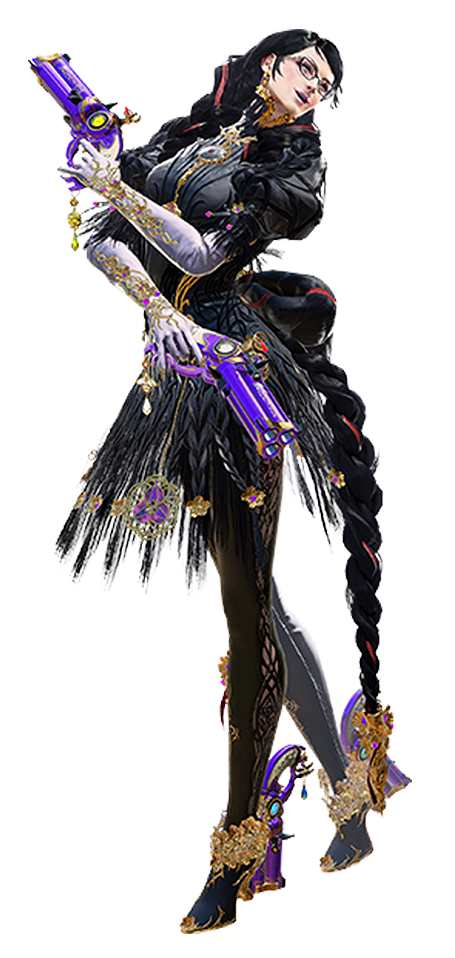
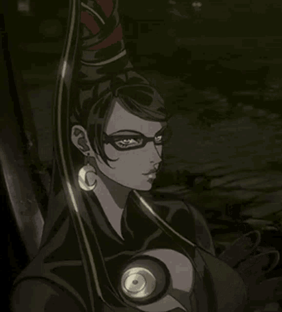
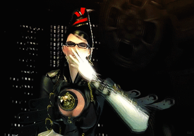
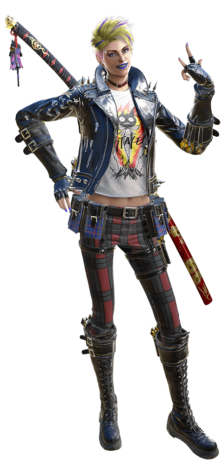
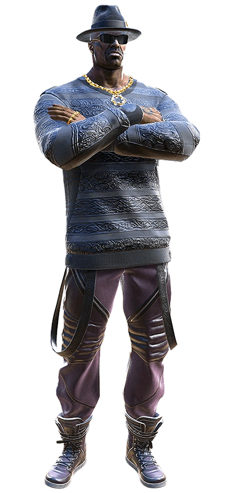

Una bruja dominatrix, princesa heredera de la aquelarre más poderosa de la Tierra, trabaja como mercenaria para el infierno, cazando ángeles a través de contratos que recibe de un barman traficante de armas. Personalidad jamás fue algo que le faltó a Bayonetta. Su lanzamiento, dos generaciones atrás, puso a Platinum Games en el mapa y fundó un seguimiento de culto que se mantuvo firme, pese a malos porteos y saltos de exclusividad a consolas menos populares.
Una bruja dominatrix, princesa heredera de la aquelarre más poderosa de la Tierra, trabaja como mercenaria para el infierno, cazando ángeles a través de contratos que recibe de un barman traficante de armas. Personalidad jamás fue algo que le faltó a Bayonetta. Su lanzamiento, dos generaciones atrás, puso a Platinum Games en el mapa y fundó un seguimiento de culto que se mantuvo firme, pese a malos porteos y saltos de exclusividad a consolas menos populares.
Sin embargo, todo esto que cuento no está tan cementado en el imaginario colectivo como parece. Generalmente son Vanquish y Metal Gear Rising: Revengance los considerados juegos fundacionales del estudio osaqueño. Y ni hablar de cómo se le niega a Cereza el lugar que le corresponde como una de las grandes mujeres del gaming. Sus juegos pueden haber sido fundamentales para la industria moderna, pero como personajes en sí mismas, ni Lara Croft ni Samus Aran hicieron mucho para alcanzar el lugar que ocupan como representantes de las jugadoras o todas aquellas personas que se identifiquen como tal. Soy consciente de ser un hombre hablando de cómo representar mejor o peor a las mujeres en los juegos, así que permítanme explicarles mi punto de vista.
No voy a negar que hay una explotación en el concepto de Bayonetta como personaje femenino, pero en parte esto es en función del desarrollo de esta antiheroína. Mientras que no niego su existencia, por momentos lo que podría llegar a parecer fan service es simplemente un conjunto de rasgos que nos cuentan la historia de quién es esta bruja. Su actitud seductora, de femme fatale, como una chica Bond que te podría masticar vivo, es un reflejo de su confianza y autocontrol. La versión femenina de cuanto personaje masculino canchero existe en los videojuegos. Por otro lado, es base de su identidad y backstory.
Desde el mito Pop, las brujas siempre utilizaron la seducción y la sexualidad como herramientas. La desnudes y las danzas también forman parte del repertorio del ritual de la magia y no solo con connotaciones negativas. La energía sexual es algo utilizado incluso en la llamada Magia Blanca. El acierto de Hideki Kamiya y su equipo al crearla, fue como atravesar todos esos conceptos a través de la lente tanto creativa como publicitaria.
Cereza es parte Madonna, parte Sarah Connor. Parte Betty Page, parte Barbarella. Parte Elvira, parte Sailor Moon. Como personaje responde también al manual de marca de los estudios donde los desarrolladores de Platinum iniciaron sus carreras. Cereza tiene rasgos de Dante de Capcom, como de Sonic de Sega.
Cereza es soberbia, segura de sí misma y jamás le tiembla el pulso a la hora de actuar. Sin embargo, desde su concepción le dotaron ciertos rasgos que definen y agudizan su feminidad. Lejos de actuar primero y pensar después, Cereza no es fría pero sí calculadora. Siempre está un paso adelante, lo que le da un aire de invulnerabilidad y la precisión de cirujana que tiene a la hora de ejecutar sus ataques coreográficos, que mezclaban artes marciales y armas de fuego, seis años antes de la salida de John Wick.
Pero lo que mejor defiende el argumento del valor de su representación, son los arcos que atraviesa. Cereza nunca es una damisela en peligro. Tiene intereses románticos pero no la definen como entidad, ni intervienen en el desarrollo de argumentos de la franquicia. Los valores que la motivan son la justicia, la familia y la sororidad con las demás brujas de su aquelarre. Es fácil perderse todos estos detalles cuando en pantalla lo que vemos es una reina gótica, desnudandose para sumonear un dragón gigante hecho de su cabello, pero que puedo decirles, para mi esto también es una demostración de cómo la sexualidad puede ser coherente en el marco de la obra.
Bayonetta tiene un costado rosa. Sangra pétalos de flores y utiliza su lápiz labial como varita mágica, pero no tengo dudas que más de uno se pondría colorado si le revisa la cuenta de Tumblr. Se puede ser ruda sin perder la gracia y el estilo. Se puede ser explícito en función de una historia. Mucho fan service barato embarró por años este argumento pero, en el contexto correcto, funciona como un hechizo.
Y el contexto es todo, porque ella no es lo único que hace brillar a la saga. Hablar de demonios contra ángeles suena trillado, pero como siempre se pudo atestiguar desde el diseño de criaturas del juego, el asunto no es tan superficial. Todo el imaginario celestial está directamente inspirado en la mitología escandinava, la cual cruza conceptos de mitos nórdicos con la cristianización de Dinamarca, Noruega y Suecia, alrededor del siglo diez. A esto también se suman las descripciones encontradas en los pergaminos del Mar Muerto, que describen a los ángeles como ruedas de fuego cubiertas de ojos, carrozas vivientes o criaturas gigantes de seis alas, con trompetas que anticipan el fin de los tiempos.
Y el contexto es todo, porque ella no es lo único que hace brillar a la saga. Hablar de demonios contra ángeles suena trillado, pero como siempre se pudo atestiguar desde el diseño de criaturas del juego, el asunto no es tan superficial. Todo el imaginario celestial está directamente inspirado en la mitología escandinava, la cual cruza conceptos de mitos nórdicos con la cristianización de Dinamarca, Noruega y Suecia, alrededor del siglo diez. A esto también se suman las descripciones encontradas en los pergaminos del Mar Muerto, que describen a los ángeles como ruedas de fuego cubiertas de ojos, carrozas vivientes o criaturas gigantes de seis alas, con trompetas que anticipan el fin de los tiempos.
La mismísima Divina Comedia es en parte la inspiración para el mundo de Bayonetta. Y lo que eleva a la experiencia es que todos estos detalles no quedan sepultados bajo el vendaval de balas. La yuxtaposición del frenetismo del Hack n’ Slash y el peso de la inspiración de su diégesis, hacen de este juego de acción japonés una propuesta única. El set de reglas de Bayonetta es tan firme y bien establecido, que ni siquiera Nintendo pudo domarlo cuando la secuela se convirtió en un exclusivo de la N Roja y sus valores familiares. Porque pudieron cortarle el pelo y tapar un poco su escote, pero eso no quitó por ningún momento el impacto de la sensualidad y brutalidad de nuestra protagonista.
Otro acierto de la secuela fue demostrar que había mucha más tela para cortar en esta historia. Perder la confianza de los demonios no solo puso en jaque la estabilidad de Cereza, sino que duplicó la cantidad de criaturas sobrenaturales que la querían muerta. Una cosa es estar atrapada en una guerra entre el Cielo y el Infierno y otra muy distinta es estar en guerra contra ambas al mismo tiempo. A su vez, toda la exploración de la capacidad que tienen estás brujas para manipular el tiempo, no sólo contextualizó sus habilidades – lo que a su vez continúa aportando a la coherencia del personaje – sino que fue utilizado como vehículo narrativo para darnos lo más parecido a una historia de origen, tanto de Cereza como del mundo que habita. Lamentablemente, que en un principio saliera solo para Wii U – la consola menos vendida en la historia de Nintendo -, hizo que la gran mayoría de los jugadores y jugadoras se perdieran de estos detalles.
Y desde ya, aún después de haber dicho todo esto, no podríamos ni empezar a hablar de Bayonetta 3 sin mencionar su jugabilidad. En esta historia, la ya mencionada combinación de ataques cuerpo a cuerpo con armas de fuego lleva el nombre de “Bullet Arts”. Aprovechando un vacío de poder dejado por Devil May Cry, el primer juego de la saga se lució con las coreografías cirsenses, el malabareo de enemigos y los combos desafiantes, que recompensaban la habilidad de quien estuviera al control con secuencias visuales dignas del mejor de los animes de pelea. Hasta sus recurrentes Quick Time Events – síntoma de la época de su lanzamiento – eran excusados por terminar en escenas de demonios emergiendo del averno para desgarrar con sus dientes la carne de un ángel y arrastrarlo aún vivo hacía lo más profundo del infierno.
El control en Bayonetta es tán ajustado y hay tanto espacio para masterizar las técnicas, que el complemento de una serie de desafíos y un sistema de ranking importado desde la época de los arcades, daban cuerpo a la experiencia sin parecer relleno artificial. Esto, sumado a un buen diseño de mecánicas, nos obligaba a alejarnos del masheo de botones y aprender a pelear como estás brujas. El “Witch Time”, la técnica que paraliza el tiempo unos segundos si esquivamos en el momento preciso, es fundamental para hacer control de multitudes y algunos enemigos sólo podían ser eliminados con técnicas específicas, lo que nos obligaba a salir constantemente de nuestra zona de confort. Ganar una pelea de casualidad no es una posibilidad. Bayonetta te seduce para que te comprometas. Estos son sus fuertes y la convirtieron en la franquicia que es hoy.
Pasaron ocho años desde la última vez que vimos a la bruja de Umbra en acción y el mundo es otro lugar. La oferta de juegos diaria, la accesibilidad hacia los mismos y los incontables juegos como servicio diseñados para que no toques otro título, son los depredadores de la selva digital. Bayonetta tiene una base de seguidores fieles que toleraron los constantes retrasos y la falta de novedades durante los últimos cinco años desde su anuncio, pero es difícil obviar el detalle de que en ese tiempo la industria cambió. Los hábitos de consumo cambiaron por completo y la Switch comienza a quedar obsoleta más rápido que nunca, desde la aparición de las consolas de nueva generación de la competencia y las placas de video de avanzada en PC.
Dentro del juego sucede un cataclismo similar. Cereza está disfrutando de un período de paz, cuando de repente el caos irrumpe en la ciudad de Nueva York, la cual es arrasada por un tsunami creado por criaturas multiversales biomecánicas que buscan aniquilar todas las realidades, hasta que solo quede una. Atenta a este suceso, una combatiente de otra dimensión llamada Viola, viaja al plano de Cereza para advertirle y aunque llega tarde, logra ponerla al tanto de los Homunculi y Singularidad, la amenaza que parece comandarlos.
Toda esta exposición está realizada por una mezcla de viñetas animadas imperfectas y secuencias de acción frenéticas. Ni bien obtenemos el control de nuestro personaje, nos vemos obligados a combatir con estás máquinas surfeando los escombros de lo que alguna vez fueron los edificios de la Gran Manzana, mientras el agua acaba con cualquier tipo de vida que alguna vez habitó la isla de Manhattan. Agua, fuego, robots y demonios al son de una música de ritmo escalante. Ese es el primer abrazo que nos da el juego. El que nos dice “bienvenido a casa, estuvimos acá todo este tiempo”
Y no me da vergüenza decir que existe un mundo donde los fans no hubiéramos esperado ningún cambio fundamental. Sin embargo, Bayonetta 3 plantea varias novedades desde el gameplay, justificando la espera. Ahora, en lugar de tener que esperar a los QTE’s para invocar a los demonios, los podemos llamar en cualquier momento – dependiendo la saciedad de una nueva barra de energía lunar – para que se metan en la pelea contra estás máquinas de guerra. Una vez summoneados, nosotros pasamos a controlar el ataque de los mismos, pero debemos mantener el movimiento de Cereza, ya que ella no puede atacar, sino que baila sugestivamente para mantener el demoníaco cordón umbilical conectado. Este detalle es el balance perfecto de la mecánica, porque estos Kaijus imparten muchísimo daño, pero abusar de los mismos nos deja expuestos y nunca es estratégicamente recomendable.
Mejor aún, estos demonios también pueden ser invocados como finishers de combos. Si luego de la estocada final de cada compleja cadena de puños y patadas, añadimos un movimiento más, uno de estos leviatanes puede aparecer y asestar un devastador golpe adicional. Haber sacado a los demonios de las secuencias no controlables del juego es uno de los mejores aciertos de esta entrega. Y lo mejor es que en nuestro viaje a través del cosmos para detener el fin de la existencia misma, vamos a cruzarnos con distintas versiones de Cereza – como Bayonetta Cleopatra, Bayonetta Pirata Steampunk o Kpopnetta – quienes van a darnos armas y donarnos sus demonios, para que los podamos poner en nuestra rueda de habilidades. Las combinaciones son numerosas y la acción solo se repite si no rotamos entre las posibles oportunidades. Estos demonios incluso pueden ser convocados para resolver olvidables puzzles y secciones de plataformas, lo que deja un sabor agridulce, pero siempre suma a la variedad.
Todo este enfoque en los demonios gigantes tiene una explicación. El director de Bayonetta 3 es Yusuke Miyata, quien en su momento tuvo el rol de diseño de criaturas del nunca lanzado Scalebound, un RPG de acción exclusivo para Microsoft, en el cual debíamos dominar dragones gigantes. Miyata no fue el único que migró de proyecto, sino que gran parte del equipo de Scalebound vino con él y si afilamos el ojo, hasta el protagonista del mismo cruzó de lado.
Viola está inspirada en el personaje principal de la nonata franquicia de Platinum y por momentos hasta se parecen. De todos modos, sabe defenderse por sí misma. Su actitud de adolescente rebelde pero insegura, contrasta a la perfección con toda la pompa soberbia de Cereza y encima suma un arquetipo de personaje pocas veces explorado en el gaming por una mujer. En pocas palabras, Viola es una payasa. Un alivio cómico que oscila entre Deadpool y Jar Jar Binks, vestida en la Bond Street. Viola es torpe y atolondrada. Se equivoca, se tropieza y se lastima. Por momentos hasta tiene mayor desarrollo que Cereza al estar realmente preocupada por el incipiente apocalipsis, ya perdió mucho más que el resto de los personajes del juego. El balance entre lo gracioso y lo cool está muy bien logrado y ayuda a que el jugador se encariñe y acceda de mejor humor a jugar con un personaje que nadie pidió.
Sobre todo porque Viola también se diferencia de Cereza en los controles, haciendo que todo sea distinto. En su caso, solo contamos con una espada y un set de tomas mucho más limitado. Por otro lado, no podemos invocar múltiples demonios, sino tan solo a Cheshire, el clásico gato de “Alicia en el País de las Maravillas”, pero una versión más Clive Barker que Tim Burton.
Cheshire combate sin nuestro input y nos deja movernos libremente pero nos quita nuestra katana, lo que nos deja considerablemente indefensos. Por otro lado, el “Tiempo de Bruja” de Viola no es activado por el escape, sino por el parry perfecto y dura mucho menos, por lo que nuestra velocidad de reacción tiene que ser todavía superior. Viola ofrece un gameplay diferente y aún dentro de su espectacularidad se siente menos efectiva que Bayonetta, manteniendo la intención de representar a los personaje no solo desde su historia, sino desde cómo se controlan.
Sin embargo, no puedo decir que el experimento de tener otro director saliera del todo bien. Las decisiones de Miyata alejan un poco al juego de sus intenciones iniciales. Algunos de los conceptos de Scalebound funcionan bien, pero otros comienzan a irse por la tangente y por momentos el juego parece una creación de Suda 51. Las dirección de cinemáticas rememoran a títulos como Killer 7 y los eventuales cambios de género nos recuerdan a secuencias de No More Heroes. Sin ir más lejos, Bayonetta 3 tiene como tercer personaje jugable a Jeanne – veterana de la serie – quien en lugar de lucirse peleando, hace las veces de agente secreto con quien tenemos que infiltrarnos en un complejo militar, en una suerte de Elevator Action en 2.5 dimensiones.
Estas secuencias y cambios de registro están lo suficientemente esparcidos a lo largo del juego como para no extralimitar su bienvenida, pero al mismo tiempo son tantos que Bayonetta 3 puede parecer una colección de mini desafíos que unen una historia, más que un juego cohesionado. Mientras que los QTEs prácticamente escasean, el tìtulo los reemplazó con largas secuencias animadas no interactivas o momentos de Time Attack donde utilizamos a nuestros demonios como vehículos, virando una vez más el género del juego. Bayonetta 3 es más una kermés de títulos de acción unidos por cinemáticas poco prolijas, que un Hack n’ Slash propiamente dicho. Esto tiene sus pros y contras, que al final del día no se nivelan. Porque en resumen, podría decir que mientras que es inconstante, con el control en la mano el juego logra entretener. Todo lo mecánico que hace a Bayonetta está ahí para ser encontrado. Lamentablemente, la consola no acompaña la intención.
La Switch es una pieza de hardware admirable complementada por la creatividad de los juegos de Nintendo y – matemáticamente hablando -, tiene todas las chances de convertirse en la consola más vendida de todos los tiempos. Aún así, nada de esto disimula el hecho de que ya no tiene lo necesario para estar a la altura de lo que los estudios y el público buscan. Bayonetta 3 no tiene problemas de performance propiamente dichos, pero la Switch no tiene cómo poner en pantalla ángeles, demonios y robots peleando en medio de un tsunami que está engullendo a Nueva York, por lo que todo es un festival de transparencias, popeo y clipping. Los escenarios son estériles y siempre sitios en ruinas para que los escombros y el humo disimulan la visibilidad y las paredes invisibles. Los enemigos más grandes difícilmente caben de manera comprensible en cuadro y ni hablar que a la hora de ejecutar los combos más complejos o invocar a nuestros demonios, todo lo que queda en pantalla es una marejada de colores y efectos de luz que rara vez dejan entender que está sucediendo.
Todo eso se maximiza y empeora si intentamos jugarlo de manera portátil. Aún haciéndolo en la versión Oled, la escala que el juego propone queda perdida y desproporcionada en la pantalla pequeña. Peor aún, la versión dockeada no ayuda en lo más mínimo a esconder estas miserias, sino que les arroja serrucho y falta de definición a los escombros que hacen las veces de escenario, impidiendo definirse a favor de la consola híbrida de Nintendo. Bayonetta es lo suficientemente importante como para ya haber inspirado otros juegos, como es el caso de Stellar Blade, hijo no reconocido de Cereza y 2B de Nier: Automata, que saldrá de manera exclusiva para PS5 y se ve espectacular. Los Kaijus, las secuencias de vehículos y los momentos de acción guionados podrían haber sido inolvidables en una consola de nueva generación. Pero lejos de eso, a duras penas podemos admirar la animación de los combos que estamos ejecutando, lo que es una pésima cualidad para un juego del estilo.
En este contexto, otro punto negativo termina siendo el contenido alternativo. Bayonetta 3 presenta algunos mapas con mayor escala, los cuales esconden varios secretos, además de los usuales desafíos que nos llevan a arenas de combate o nos instan a atrapar a veloces animales infernales. Sintiéndose todo tan vacío, la exploración resulta bastante sencilla y en el marco de la extinción de todos los universos concebidos, la urgencia de avanzar la trama desentona con la idea de desviarnos hacía un portal, para ver si podemos matar a una cantidad de enemigos determinada antes de que se acabe el tiempo, para recibir una recompensa que hasta podemos comprar en la tienda, desde el menú.
Comencé este análisis diciendo que personalidad jamás fue algo que le faltó a Bayonetta, pero en este caso el juego ya no parece saber quién es ni qué quiere hacer. Definitivamente busca innovar y comienza a construir sobre el legado de la obra, pero todo se pierde en un ruido de intenciones incoherentes, regalando emociones fugaces que poco tienen para ofrecer después de la primera descarga de endorfinas. El desarrollo de personajes, el mundo establecido y todo lo que construye a la experiencia, es reemplazado por grandes momentos de acción que se apoyan en una historia floja de papeles, inspirada en lo peor del cine de superhéroes contemporáneo. Están nuestros personajes, pero no está nuestro juego. La diversión está, pero más por memoria muscular que por mérito.
El veredicto final es triste. Bayonetta 3 es víctima de una narrativa, un diseño y un hardware que quedó viejo. No hay dudas de que en Platinum se divirtieron, ya que el juego es un monumento a la experimentación y está plagado de guiños y referencias al estudio. Pero algunos experimentos a veces explotan en la cara. No soy inmune a la poética de que luego de enfrentar al mismísimo Cielo e Infierno, el fin de la existencia lo traiga el hombre con sus máquinas y hasta confieso que jamás espere que el juego se fuera para ese lado. Pero el argumento tiene la sutileza de un pastelazo en la cara y tanto las intenciones como las identidades de los nuevos personajes, son obvias desde el primer momento. Para colmo de males, algunas de las cuestiones planteadas por este relato no llegan a contar con resolución alguna, restando a la motivaciones de los personajes.
Bayonetta no es culpable del hardware en el que le tocó salir, pero si es culpable de no respetar su propio legado. El juego es inconstante, desprolijo e incómodo, con pequeñas explosiones de diversión. Cereza ahora corre el riesgo de caer al olvido como tantas otras franquicias con las cuales Nintendo no sabe qué hacer, mientras que claramente Platinum quería hacer otro juego y les dio vergüenza admitirlo. Bayonetta 3 tiene lo suyo, pero me cuesta recomendarlo y si tengo que ser sincero, pese a su cuestionable colección de calificaciones casi perfectas, sinceramente creo que acabamos de saborear el último beso de la bruja de Umbra por un largo tiempo.